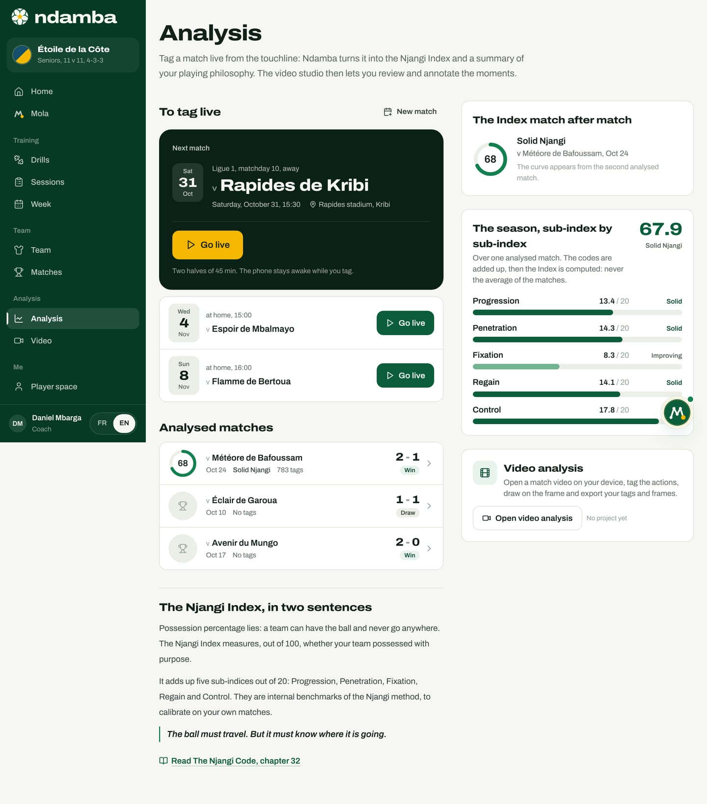

The season and video analysis
The Analysis page, which follows the Njangi Index match after match and across the whole season, then the video studio: open a filmed match from the device without ever uploading it, tag at the right moment, draw on the frame, find your clips again and export.
11 min read
A match tells a story; a season tells a method. The Analysis page gathers every tagged match of a team and shows whether the Njangi Index is rising, flat or falling, sub-index by sub-index. This is where a technical director sees whether the week’s work shows up on Saturday. Video answers another question: how do you make players see what the numbers say? Many coaches already film with a phone, but a video file is heavy and mobile data is expensive. So Ndamba opens the video directly on the device, without ever sending it over the internet, and only saves what the coach adds to it: tags, notes and annotated images.
The Analysis page: the season at a glance
In the menu, under Analysis, tap Analysis. On a phone, it is the Analysis tab in the bottom bar. The page’s subtitle sets the order of things: "Tag a match live from the touchline: Ndamba turns it into the Njangi Index and a summary of your playing philosophy. The video studio then lets you review and annotate the moments."


To tag live
At the top, To tag live lists the upcoming matches. The first one fills a dark card, Next match: date, competition, opponent, time, venue and the gold Go live button, with this reminder: "Two halves of 45 min. The phone stays awake while you tag." The following ones come as rows, each with its own button. A match already under way, or one that carries tags, shows Resume live; a planned match whose date has gone by carries a Date passed label. The New match link creates one (chapter 11).
On the Free and Player Premium plans, one match can be tagged live. Beyond that, the card says "Unlimited live tagging is in Coach Pro" and the button becomes See the plans; reached by another route, the live tagger itself shows "Unlimited live analysis with Coach Pro". Payments are not connected yet: activating a plan is a demonstration (chapter 24).
Analysed matches
The Analysed matches list shows each tagged match, newest first: a small dial with the rounded Index (68), the opponent, the date, the band (Solid Njangi), the number of tags, the score and the Win, Draw or Defeat label. Finished matches with no tags at all come next, with a grey trophy and No tags: in the demo, the matches against Éclair de Garoua (1-1) and Avenir du Mungo (2-0). Tap a row to open the report (chapter 13).
A finished match with no tags can still be tagged afterwards. Open its report and tap Go live: the live tagger accepts a finished match and says so: "Match finished: new tags complete the report."
The Index match after match
On the right, the card The Index match after match draws the season’s curve. With a single analysed match, as in the pro club demo, it shows that match’s dial and band and warns: "The curve appears from the second analysed match." From two matches on, it draws a line from 0 to 100, with the 35, 50, 65 and 80 thresholds as guides, one point per match from oldest to newest, and the latest value. The line above says how many matches count: "2 matches analysed. Tap a point to open its report."
The season, sub-index by sub-index
Under the curve, The season, sub-index by sub-index gives the season’s Index in large type (67.9 in the pro club demo, Solid Njangi) and the five bars. The calculation follows the method’s rule, repeated under the title: "The codes are added up, then the Index is computed: never the average of the matches." A match tagged with 700 tags therefore weighs more than a half-tagged one, which is fair: it holds more observed play. With a single match, the season’s Index is that match’s Index.
The Index in two sentences, and video
Below the matches, The Njangi Index, in two sentences recalls the starting idea, "Possession percentage lies: a team can have the ball and never go anywhere.", then the motto and the link Read The Njangi Code, chapter 32. The Video analysis card ("Open a match video on your device, tag the actions, draw on the frame and export your tags and frames.") lists the three latest projects and opens the studio with Open video analysis.
If no team exists yet, the page first asks you to create one, Create your team first: a Team name, an Age group (U9 to Seniors), a Format (5 v 5 to 11 v 11), then Create the team.
Video: what stays on the device
The video studio reads a file that sits on the device: the phone, tablet or computer that filmed or received the video. The file is never sent over the internet. Ndamba saves in that device’s browser the project title, the file name, its duration, your tags, your notes and your annotated images. It does not keep the video itself: each time you come back to the project, you reopen the same file, and your tags fall back into place at the right moment.
Creating a video project
- In the menu, under Analysis, tap Video. On a phone, tap More, then Video, or Open video analysis from the Analysis page.
- The Video analysis page opens. With no project yet, it shows No video project and this advice: "Film with a phone and a tripod, then open the file here." At the bottom, Analyse a video in three steps sums up the method: Film (a phone on a tripod, up high, level with the halfway line, the whole pitch in frame), Tag and Show ("Five clips are enough for the video session.").
- Tap New project.
- In the New video project window, pick the Linked match (optional), or leave No match. Picking a match fills in the Title, here "Étoile de la Côte v Flamme de Bertoua". You can write your own, for example "Lionceaux v Requins, second half".
- Tap Create the project. The studio opens.

The Analyse the video button of a match report does the same in one move: it opens the project linked to that match, or creates it.
The video studio
At the top of the studio: the Video projects link back to the list, the CSV and JSON buttons (active from the first tag), the project title with a pencil, Rename the project, and the Linked match (optional), which you can change at any time. When a match is linked, Linked match report opens its report.
Opening the video

The large dark area reads Open a video: "Choose a video file on this device (MP4 or WebM). It is not uploaded anywhere." Tap Choose the file, or on a computer drag the file onto the area. Until the video is open, the codes stay greyed out and the studio says "Open the video first." A file that is not a video is refused: "This file is not a video."
When you come back, the area reads "Choose the video "match-demo.mp4" again", with the explanation: "To save memory, Ndamba does not keep the video. Reopen the same file to find your tags at the right moment." If the file you pick has a different name, a banner warns that the tags will be placed on this video. The Change video link opens another one.
Playing, slowing down, stepping frame by frame

Under the frame, from left to right:
- Play and Pause (tapping the frame also plays or pauses);
- Back 5 s and Forward 5 s;
- Previous frame and Next frame, to move one frame at a time (1/25 of a second);
- the time, for example "00:00 / 00:24";
- the speeds 0.5x, 1x and 2x;
- the Draw pencil.
Above the buttons, the video timeline carries a coloured mark for each tag and the gold playhead. Tap the timeline to jump to a moment, or a mark to go to that tag. On a computer, the keyboard is enough, and the studio says so: "Keyboard: Space play or pause, arrows 5 s, comma and period frame by frame, D draw, N note. The codes use the same keys as live tagging (1 to 9, F S L K R A B, Q W E)." The digits are for our passes and danger, F and S for fixation, L, K and R for transitions, A and B for the opponent’s shots and goals, Q, W and E for the opponent’s passes and entries. On a phone, the player stays pinned to the top while you scroll down to the codes.
Tagging at the right moment
The code card takes the video time as its title, Tag at 00:00, and reminds you: "The tag lands at the moment shown by the video." These are the live tagging codes (chapter 12), in five groups: Possession (Pass, Pass lost, Progressive, Line broken), Danger (Final third, Box, Shot, On target, Goal), Fixation (Pins two, Switch), Transitions (Loss, Won back 5 s, Ball won) and Opponent (Their shot, Their goal, Their pass, Their lost pass, Their final third). Each button shows how many times it has been used, for example "×3", and a message confirms each tag ("Pass, 00:00").
The studio applies the same rules as live tagging: a Goal adds Shot and On target, an On target adds Shot, and a Ball won tapped within 5 seconds of a Loss or a Pass lost becomes Won back 5 s. Under the codes, the Note field takes a free sentence ("the pivot turns") with Add the note.
The good method: pause, step back frame by frame to the exact moment, tap the code, play again. The 0.5x speed helps with fast phases.
The video’s Njangi Index
On the right, the card The video’s Njangi Index, "Computed from this video’s tags.", gives the score, its band and the five sub-indices as small bars. It updates with every tag.

The screenshot shows a trap worth understanding. Three completed passes and no loss give a Control of 20 out of 20, and nothing else: the Index is 20.0, Possession without purpose. The Index only makes sense over many actions. The match report warns below 12 tags; the video card does not.
Clips
The Clips card lists every tag in video order, with the total count: the time, the code’s coloured icon, its name, the codes added automatically ("+ Shot, On target"), the note if there is one, the thumbnail of the annotated image, and the Delete this tag bin, which also removes the codes added with it. Tap a clip: the video restarts 4 seconds before the moment, so you see the move being built. As soon as two groups are present, chips let you filter: All, Possession, Danger, Fixation, Transitions, Opponent or Note.
A clip is a marked moment in the video, not a cut-out file. For the video session with the players, you replay the clips from this list, on the same device.
Drawing on the frame
- Tap the Draw pencil (or the D key). The video pauses and the word "Drawing" appears on the frame.
- Pick the tool, Arrow, Circle or Freehand, and the colour, Gold, White or Red. Circles are slightly flattened, like players seen from the stand.
- Draw with a finger or the mouse. Undo stroke, Redo the stroke and Clear fix mistakes.
- Tap Save the image. The frame and the drawing are merged into a small image, attached to the selected tag if it is very close to this moment, or otherwise to a new note at this moment. The message confirms: "Image saved on the tag at 00:12".
- Close drawing (or Escape) closes the tools without saving.
The thumbnail appears in the clip. Tap it to enlarge it: Download the image saves it on the device as a JPEG, Remove the image detaches it from the tag, Go to the clip replays the moment.
Exporting: CSV and JSON
The two buttons at the top of the studio download the work to the device, without sending anything:
- CSV: one line per tag (columns time_s, time, code, label, side, note, drawing and group), to open in a spreadsheet, for example "ndamba-etoile-de-la-cote-v-flamme-de-bertoua.csv".
- JSON: the full project, the video’s Index and every tag, images included. This is the format to keep or to hand to an analyst.
The list of projects

On Video analysis, each project has its card: the dial of its Index, the title, the linked match or the creation date, the file (or No video yet), the duration, the tags, the images and the band. The whole card opens the studio. The Delete the project bin asks for confirmation, "Delete this project and its tags?", before erasing. The video itself stays untouched on the device.